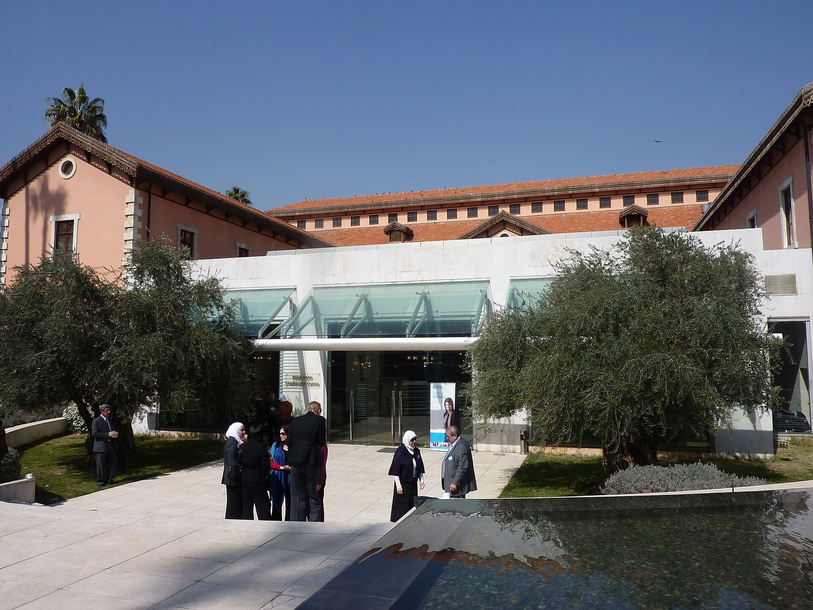

إعادة استقطاب الكفاءات الأكاديمية السورية
من خلال فتح مسارات للتدريس عن بُعد، والعودة المؤقتة، والتعاون البحثي، تستطيع سوريا البدء في استعادة الخبرات التي خسرتها على مدى سنوات من القمع والحرب.

مع شروع سوريا في عملية إعادة الإعمار، تواجه جامعاتها نقصاً حاداً في أعضاء الهيئة التدريسية المؤهلين. فعلى مدى عقود، أضعفت هجرة الأكاديميين منظومة التعليم العالي السورية، قبل أن تأتي سنوات الصراع لتسرّع هذا النزيف. وتشير التقديرات إلى أن ما بين 20 و30 في المئة من الأكاديميين الجامعيين غادروا البلاد خلال الحرب، أي ما يعادل نحو 1,500 إلى 2,000 أستاذ جامعي. وقد أدى رحيلهم إلى استنزاف الكفاءات في الأقسام التخصصية، وزيادة الاعتماد على مدرسين يفتقر بعضهم إلى المؤهلات الكافية، واتساع الفجوات المعرفية لدى الطلاب. وفي المحصلة، توصف هجرة الكفاءات الأكاديمية بأنها خلّفت «الأثر الأكثر ضرراً على جودة قطاع التعليم العالي».
ولإعادة بناء البنية البشرية للتعليم العالي السوري ومعالجة هذه التداعيات، لا يتعين على سوريا أن تجعل العودة الدائمة الهدف الفوري أو الوحيد لسياستها تجاه الأكاديميين في المهجر. فبوسع وزارة التعليم العالي والبحث العلمي، بالتعاون مع الجامعات السورية، إنشاء مسارات مؤسسية تتيح للأكاديميين في الخارج الإسهام في التدريس والبحث العلمي وتطوير المناهج وبناء العلاقات وإعادة تأهيل المؤسسات، بالتوازي مع تحسين الظروف التي يمكن أن تجعل العودة طويلة الأمد أو الدائمة خياراً ممكناً مع مرور الوقت.
كيف خسرت سوريا كوادرها الأكاديمية؟
غادر الأكاديميون السوريون البلاد لأسباب سياسية وأمنية واقتصادية معقدة ومتداخلة في كثير من الأحيان. وبالنسبة إلى كثيرين منهم، جعل القمع السياسي الرحيل أمراً لا مفر منه. فقد أصبحت الهجرة «مساراً ضرورياً للمعلمين الذين لم يستطيعوا، أو لم يرغبوا في، التظاهر بالولاء» للنظام. وفي مقابلات أُجريت من دون الكشف عن هويات المشاركين، أوضح أكاديمي سوري أنه غادر دمشق تحديداً لأنه شعر بأنه «لا ينبغي له أن يلتزم الصمت»، فيما قال آخر إنه لم يعد قادراً على «البقاء في بلد يعج بالقمع والاستبداد»، ولا على «مشاهدة قتل المدنيين والتزام الصمت». أما عالم الأغذية قاسم السيد محمود، على سبيل المثال، فغادر البلاد بسبب متطلبات الخدمة العسكرية، قائلاً إنه «لم يستطع تأييد أفعال الجيش ضد المدنيين الأبرياء».
وتعرض أكاديميون آخرون للاستهداف المباشر من جانب الدولة. فقد غادر الدكتور رضوان زيادة، الباحث البارز حالياً في المركز العربي بواشنطن، سوريا عام 2007 بعدما جعل منه نشاطه في مجال حقوق الإنسان هدفاً للحكومة. وفي مقابلة مع الشبكة، تحدث زيادة عن خضوعه للإقامة الجبرية والاستجواب على أيدي نظام الأسد، موضحاً أن خطر السجن دفعه إلى اتخاذ قرار بمواصلة عمله من الخارج. وشدد على أن تجربته لم تكن استثنائية، بل كانت «قصة كثيرين».
ثم جاءت الحرب لتفاقم هذا النزوح المدفوع سياسياً، إذ عطلت المنظومة التي كانت سوريا تعتمد عليها في إعداد كوادرها الأكاديمية وتعويض النقص فيها. وأدت العقوبات الغربية والعزلة السياسية للبلاد إلى حرمان الطلاب من فرص التدريب الدولي. وإضافة إلى ذلك، يقول طلال الشهابي، أستاذ الهندسة في جامعة دمشق، إن «عدداً كبيراً ممن أُرسلوا إلى الخارج لدراسة الدكتوراه قبل الحرب لم يعودوا». ونتيجة لذلك، باتت «بعض المجالات التخصصية، مثل الهندسة والتخصصات الصحية، تعاني نقصاً شديداً في أعضاء الهيئة التدريسية خلال العقد الماضي».
وقد أسهم هذا النقص في تخريج طلاب يعانون «فجوات معرفية كبيرة في بعض التخصصات»، كما أدى إلى زيادة الاعتماد على مدرسين أقل تأهيلاً، إذ شملت محاولات سد النقص الاستعانة بإداريين وأساتذة متقاعدين ومدرسين لا يمتلكون المؤهلات المطلوبة. ووصل الأمر إلى حد تدريس بعض المقررات حصراً على أيدي حملة شهادات الماجستير.
لذلك، يتعين على سوريا اتخاذ خطوات محددة لمعالجة هجرة الكفاءات الأكاديمية وتداعياتها، وإلا فإن قطاع التعليم العالي قد يستمر في خسارة كوادره «لفترة طويلة بعد التوقف الرسمي للصراع»، كما حدث في دول أخرى خارجة من النزاعات، مثل البوسنة وكوسوفو.
بين عودة الكفاءات وإشراكها من الخارج
عند النظر إلى تجارب أكاديميين مثل الدكتور رضوان زيادة، يتضح أن توفير الحماية من الاضطهاد السياسي يمثل خطوة أولى وحاسمة لتهيئة الظروف أمام عودة الأكاديميين السوريين في المهجر على المدى الطويل أو بصورة دائمة. ففي سياقات مشابهة، مثل العراق، أحجم كثير من الراغبين في العودة بسبب «ارتفاع مستوى انعدام الأمن، بما في ذلك التقارير عن اغتيال أشخاص تجرأوا على العودة». وبالنظر إلى الأسباب الأخرى التي دفعت أكاديميين سوريين إلى مغادرة البلاد، فمن المرجح أيضاً أن يكون الالتزام الحكومي بالحريات السياسية والأكاديمية شرطاً أساسياً لتحقيق عودة مستدامة.
وفي الوقت نفسه، غالباً ما تتطلب استعادة الكفاءات من الخارج سياسات موجهة قد تكون مكلفة، بما في ذلك حوافز مثل رفع الرواتب وتوفير مسارات للتثبيت الأكاديمي لأعضاء الهيئة التدريسية في بداية مسيرتهم المهنية. ورغم تكلفتها، تظهر تجارب دول أخرى أن مثل هذه السياسات قد تكون أكثر كفاءة على المدى البعيد. فقد خلص تقرير لبرنامج الأمم المتحدة الإنمائي عام 2002 حول التعافي بعد الحرب في أنغولا إلى أنه سيكون «أكثر كفاءة وإنصافاً تدريب عدد أكبر من الطلاب داخل البلاد على مستوى التعليم العالي، من خلال تطوير الكليات والمعاهد الجامعية، بدلاً من إرسال عدد محدود نسبياً من الطلاب إلى الخارج بكلفة هائلة ومع احتمال كبير لعدم عودتهم». ومن هذا المنطلق، فإن الاستفادة من الكفاءات الأكاديمية السورية الموجودة أصلاً في الخارج تنسجم مع هذا النهج، إذ تسهم مباشرة في إعادة بناء البنية البشرية لقطاع التعليم العالي.
ورغم أن المتطلبات السياسية والتكاليف الاقتصادية المرتبطة بالعودة طويلة الأمد أو الدائمة لا تجعل هذا الخيار مستحيلاً في الحالة السورية، فإنها تزيد من صعوبته وتحد من جدواه في المرحلة الأولى. ويضاف إلى ذلك أن كثيراً من الأكاديميين بنوا حياة جديدة في الخارج، بما في ذلك أسر وشبكات مهنية ومناصب أكاديمية مستقرة. لذلك، يمكن لسوريا أن تتجه، في المدى القريب، نحو إشراك الكفاءات الأكاديمية في المهجر باعتباره وسيلة أكثر عملية وفورية لمواجهة هجرة العقول.
ويعني هذا النهج، بصورة عامة، بناء قنوات تربط الأكاديميين الموجودين في الخارج بزملائهم الذين بقوا داخل البلاد، بحيث لا تضطر سوريا إلى انتظار عودتهم الدائمة كي تستفيد من خبراتهم. ويمكن لهؤلاء الأكاديميين المساهمة مباشرة من خلال التدريس عن بُعد، والإشراف على الرسائل الجامعية، وتقديم الإرشاد الأكاديمي لطلاب الجامعات السورية.
وبهذه الطريقة، يمكن لسوريا الحد من آثار هجرة العقول وتحويلها إلى شكل من أشكال تداول الكفاءات والخبرات، بما يسمح بنقل أساليب وتقنيات وتكنولوجيات ومعارف جديدة من الخارج، ويدعم تحسين قطاع التعليم العالي على المدى الطويل.
ويُعد إصلاح المناهج أحد المجالات التي يمكن أن تستفيد من هذا المسار، إذ لطالما عانى التعليم العالي السوري أوجه قصور جوهرية في هذا الجانب. فقد أشار مدرسون وطلاب على حد سواء إلى أن التعليم الجامعي السوري «مفرط في طابعه النظري، ولا يولي اهتماماً كافياً للعروض التقديمية أو العمل الجماعي أو المشاريع التطبيقية»، إلى درجة أن كثيرين يرون أن تعليمهم «لا يرتبط بسوق العمل ولا بالمهارات اللازمة للنجاح».
وفي هذا السياق، يتمتع الأكاديميون السوريون في الخارج بقدرة خاصة على نقل المعرفة، نظراً إلى «غياب الحواجز اللغوية والثقافية»، وما يتيحه ذلك من «قدرة أفضل على فهم المناهج والتكنولوجيا الأجنبية، ومن ثم تكييفها بصورة أكثر فاعلية مع سياق الوطن».
وتعزز مناقشات الشبكة مع الدكتور زيادة بشأن واقع الأكاديميين السوريين في المهجر هذه الإمكانية. إذ يرى زيادة أن معظم الأكاديميين السوريين في الخارج مهتمون بالمساهمة في إعادة الإعمار، وهو واحد منهم، بعدما تمكن من تحقيق أمله في العودة إلى سوريا في كانون الأول/ديسمبر 2024، وهو الشهر نفسه الذي سقط فيه نظام الأسد. ووصف زيادة الجالية السورية في الولايات المتحدة بأنها «منظمة جداً ومترابطة للغاية».
وقد يساعد إشراك الأكاديميين السوريين في المهجر أيضاً على معالجة مجموعة من المشكلات المزمنة في قطاع التعليم العالي، ولا سيما البحث العلمي والاعتماد الأكاديمي. فقد كشفت مقابلات ونقاشات جماعية مع طلاب وأكاديميين في جامعات شمال سوريا عن عقبات أساسية أمام البحث العلمي، من بينها ضعف اعتراف دور النشر بالمؤسسات السورية ومحدودية الوصول إلى الدوريات العلمية الدولية.
وتتفاقم هذه الصعوبات بفعل مشكلة الاعتماد الأكاديمي. فقد أدى غياب الاعتراف الدولي خلال سنوات الصراع إلى تخرج «عشرات الآلاف من الطلاب» بشهادات غير معتمدة في المناطق التي كانت خارج سيطرة النظام. ولمعالجة هذه المشكلة وتسهيل الحصول على الاعتماد، شدد أكاديميون سوريون على ضرورة «بناء علاقات على المستوى الدولي».
وبالنظر إلى الشبكات التي يمتلكها أكاديميو المهجر، فضلاً عن المؤسسات المرتبطة بهم، مثل معهد التعليم الدولي الذي يدير «صندوق إنقاذ العلماء» ويوفر منحاً للباحثين المهددين والنازحين، فإن إشراك الأكاديميين السوريين في الخارج قد يوفر إحدى القنوات اللازمة لبناء العلاقات التي تساعد على الحصول على الاعتماد، وتوسيع الوصول إلى الدوريات العلمية، وتعزيز الاعتراف لدى دور النشر.
وقد تفضي هذه العلاقات أيضاً إلى شراكات دولية بين الجامعات السورية ونظيراتها في الخارج، بما يتيح فوائد مهمة، من بينها «الوصول إلى الموارد التعليمية... وفرص التعاون البحثي».
وخلال زيارته إلى سوريا، التقى الدكتور زيادة رئيس جامعة دمشق، الذي عيّنه مستشاراً له. كما التقى رئيسي جامعتي اليرموك والقلمون. ويبحث زيادة مع هؤلاء المسؤولين اليوم فكرة «تأسيس وبناء جامعة أميركية في سوريا»، على غرار الجامعتين الأميركيتين في بيروت والقاهرة، بهدف معلن يتمثل في رفع «جودة التعليم العالي في سوريا».
وتشكل هذه الجهود المبكرة مؤشراً ليس فقط إلى رغبة الأكاديميين السوريين في الخارج واستعدادهم للمساهمة في إعادة الإعمار، بل أيضاً إلى قدرة إشراكهم على إحداث تحسينات مؤسسية طويلة الأمد في قطاع التعليم العالي.
استراتيجية لإشراك الأكاديميين السوريين في المهجر
يمكن لدمشق، بدايةً، إنشاء جهة مؤسسية واضحة تكون نقطة اتصال للأكاديميين السوريين في الخارج. وبوسع وزارة التعليم العالي والبحث العلمي تأسيس مديرية للتخطيط والتعاون الدولي، على غرار المديرية الموجودة في وزارة التربية، على أن تُستكمل هذه الخطوة بتعيين مسؤولين مختصين بالتواصل مع أكاديميي المهجر في الجامعات الكبرى.
ووفق عدي توزان، مؤسس شبكة الأكاديميين والباحثين السوريين في المملكة المتحدة، لا توجد حالياً جهة مؤسسية واضحة يمكن لمجموعات الأكاديميين في المهجر توجيه عروض الدعم إليها. ويمكن لمكتب متخصص أن يتلقى هذه العروض، ويربط الأكاديميين بالجامعات المناسبة، وينسق جهود التعاون بين المؤسسات المختلفة.
ثانياً، ينبغي للوزارة تحديد المجالات الأكثر احتياجاً للمساعدة، وحصر الخبرات المتاحة لتلبيتها. ويمكنها، بالتعاون مع الجامعات السورية، إجراء تقييم وطني للخسائر في أعضاء الهيئات التدريسية والنقص في الكوادر، موزعاً بحسب التخصص والمؤسسة والمنطقة. وقد شدد الأستاذ الشهابي بدوره على «الحاجة إلى مسح شامل لتقييم الخسائر البشرية» الناجمة عن الهجرة خلال سنوات الحرب.
ويمكن أن يقترن هذا التقييم بإنشاء سجل طوعي للأكاديميين السوريين في الخارج، يتضمن تخصصاتهم وخبراتهم، فضلاً عن مدى استعدادهم للتدريس أو الإشراف على الطلاب أو إرشادهم، وإجراء البحوث، أو العودة إلى سوريا لفترات محدودة.
ومن شأن الجمع بين هاتين المبادرتين أن يمكّن الوزارة من مواءمة خبرات الأكاديميين في الخارج مع الاحتياجات الفعلية للمؤسسات داخل البلاد، بدلاً من الاعتماد على العلاقات غير الرسمية أو مبادرات الدعم الفردية والمتفرقة.
وأخيراً، ينبغي لدمشق إنشاء برامج مرنة تتيح للأكاديميين في الخارج المساهمة من دون اشتراط عودتهم الدائمة. ومن النماذج الممكن الاستفادة منها مشروع «العودة المؤقتة للكفاءات الوطنية» التابع للمنظمة الدولية للهجرة، الذي دعم عودة أفراد من ذوي المهارات في الشتات الأفغاني للعمل داخل البلاد لفترات بلغ متوسطها ثلاثة أشهر.
ويمكن للجامعات السورية اعتماد نموذج مماثل، عبر توفير فرص لأستاذية زائرة تمتد فصلاً دراسياً كاملاً، إلى جانب إقامات بحثية أقصر وزيارات مكثفة لأغراض التدريس. ويمكن استكمال هذه الأنشطة ببرامج للتدريس عن بُعد والإشراف على الرسائل الجامعية والإرشاد الأكاديمي، فضلاً عن شراكات لتطوير المناهج ومبادرات بحثية مشتركة.
وسيتيح البدء بمشاريع تجريبية صغيرة في التخصصات التي تعاني أشد مستويات النقص للجامعات اختبار هذه الترتيبات قبل توسيع نطاقها، مع تحقيق أكبر قدر ممكن من الفائدة من برامج العودة المؤقتة.
ولا تلغي هذه الإجراءات الحاجة إلى توسيع هامش الحرية الأكاديمية، وتحسين الرواتب، وتوفير ظروف عمل أكثر أمناً بما يجعل العودة الدائمة خياراً قابلاً للاستمرار. لكنها تتيح لسوريا أن تبدأ، منذ الآن، في الاستفادة من خبرات أكاديمييها في الخارج.
وسيكون من الخطأ أن تهدر سوريا هذه الإمكانات الكامنة في شتاتها الأكاديمي، الذي يشكل، بحسب تعبير الدكتور رضوان زيادة، جزءاً من «الأشياء الثمينة التي تمتلكها سوريا».
نوع المنشور
مقال على الموقع